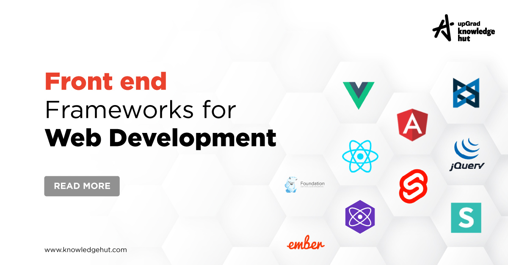

Web Technology refers to the various tools and techniques that are utilized in the process of communication between different types of devices over the Internet. A web browser is used to access web pages. Web browsers can be defined as programs that display text, data, pictures, animation, and video on the Internet. Hyperlinked resources on the World Wide Web can be accessed using software interfaces provided by Web browsers.
World Wide Web (WWW): The World Wide Web is based on several different technologies: Web browsers, Hypertext Markup Language (HTML), and Hypertext Transfer Protocol (HTTP).
Web Browser: The web browser is an application software to explore www (World Wide Web). It provides an interface between the server and the client and requests to the server for web documents and services.
Web Server: Web server is a program which processes the network requests of the users and serves them with files that create web pages. This exchange takes place using Hypertext Transfer Protocol (HTTP).
Web Pages: Web server is a program which processes the network requests of the users and serves them with files that create web pages. This exchange takes place using Hypertext Transfer Protocol (HTTP).
Web Development: Web development refers to the building, creating, and maintaining of websites. It includes aspects such as web design, web publishing, web programming, and database management. It is the creation of an application that works over the internet i.e. websites.
Web Development can be Classified into Two Ways: Frontend development and Backend development


The part of a website that the user interacts directly is termed as front end. It is also referred to as the 'client side' of the application. The front-end portion is built by using some languages which are discussed below:
Front End Frameworks and Libraries:



Backend is the server side of a website. It is the part of the website that users cannot see and interact. It is the portion of software that does not come in direct contact with the users. It is used to store and arrange data. The back end portion is built by using some languages which are discussed below:
Back End Frameworks and Technology:
In web technology, a database is a structured collection of data that is stored electronically and accessed via a web application. It serves as the backend component where data is stored, managed, and retrieved. Databases can be relational (like MySQL, PostgreSQL) using structured tables and SQL for queries, or non-relational (like MongoDB, CouchDB) which store data in flexible, document-oriented formats. They enable web applications to handle dynamic content, user data, transactions, and more by providing efficient storage, retrieval, and manipulation capabilities. Database management systems (DBMS) are used to interact with the database, ensuring data integrity, security, and performance.
A relational database stores data in tables, similar to a spreadsheet, where each table has rows and columns. The rows hold individual records, and the columns define the data attributes. Tables can be linked to each other through special keys, allowing related data to be connected.
A NoSQL database stores data in a flexible, non-tabular format, unlike traditional relational databases. Instead of using tables with rows and columns, NoSQL databases might use documents, key-value pairs, wide-columns, or graphs to store data. This allows them to handle large amounts of unstructured or semi-structured data efficiently. They are designed to scale easily and manage big data applications.


Format of data is used by web applications to communicate with each other. It is light weight text based data interchange format which means, it is simpler to read and write.
Below are two common data formats used in web development:
Web protocols are set of rules followed by everyone communicating over the web.

Graphical elements are one of the key feature of any webpage. They can be used to convey important points better than text does and beautify the webpage.